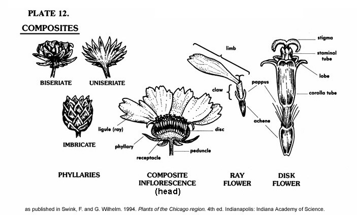

Glossary for Asteraceae
For terms not listed here, see the Plant Glossary.

- Achene
- — A hard, one-seeded, indehiscent nutlet with a tight pericarp. An example is the sunflower seed in the shell (pericarp).
- Biseriate
- — Having two series, or rows, of parts; having two rows or sets of phyllaries (bracts) on the involucre.
- Claw
- — The narrowed base of the corolla of a ray flower.
- Crown
- — In the Asteraceae family, scales or awns at the summit of an achene.
- Disk or disc
- — The central portion of a capitate inflorescence, or the receptacle of such an inflorescence.
- Disk flowers
- — The central, tubular flowers of the head. Compare ray flower.
- Floret
- — A single small flower, usually a member of a cluster, such as a head; see disk flower and ray flower.
- Head
- — A dense, compact cluster of mostly sessile flowers, used to describe the inflorescence in the Asteraceae family.
- Imbricate
- — Having phyllaries (bracts) on the involucre that overlap each other like roof shingles.
- Inflorescence
- — The discrete flowering portion or portions of a plant; a flower cluster.
- Involucre
- — A whorl or imbricated series of bracts, often appearing somewhat calyx-like, typically subtending the head.
- Ligulate
- — Bearing a ligule.
- Ligule
- — The dilated or flattened, spreading limb of the composite ray flower.
- Limb
- — The expanded portion of a corolla above the throat; the expanded portion of any petal.
- Pappus
- — A modification of the calyx, usually in the Asteraceae family, such that the segments appear as a low crown, a ring of scales, or fine hairs.
- Peduncle
- — The stalk which supports a head.
- Phyllary
- — A bract of the involucre.
- Ray
- — A strap-shaped, ligulate, typically marginal, flower in the head of a composite inflorescence.
- Ray flower
- — A strap-shaped, ligulate, typically marginal, flower in the head of a composite inflorescence. Also called ligulate flower. Compare to disk flower.
- Receptacle
- — An enlarged or elongated base of a head on which the flowers are borne.
- Staminal tube
- — The stamens of a composite flower united into a ring.
- Uniseriate
- — Having only one series, or row, of parts; having only one row of phyllaries (bracts) on the involucre.